KENTUCKY MEAT SHOWER
documentary
A 3D animated short based on the Kentucky Meat Shower of 1876.
Created in Blender using a custom toon-shader.
WHALEFALL
animated short
Created with Blender, Houdini, Photoshop, After Effects, and Premiere. Audio composed in Ableton Live.
FALCONER
animation
Piece using Yeats' The Second Coming and sampling audio from the last recordings at Jonestown.
Created with X-Box Kinect SDK, Blender, Cinema 4D, ZBrush, Octane, Photoshop, After Effects, and Premiere. Audio composed in Ableton Live.
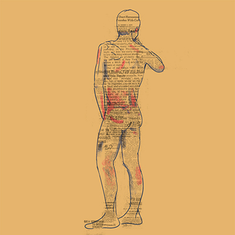

 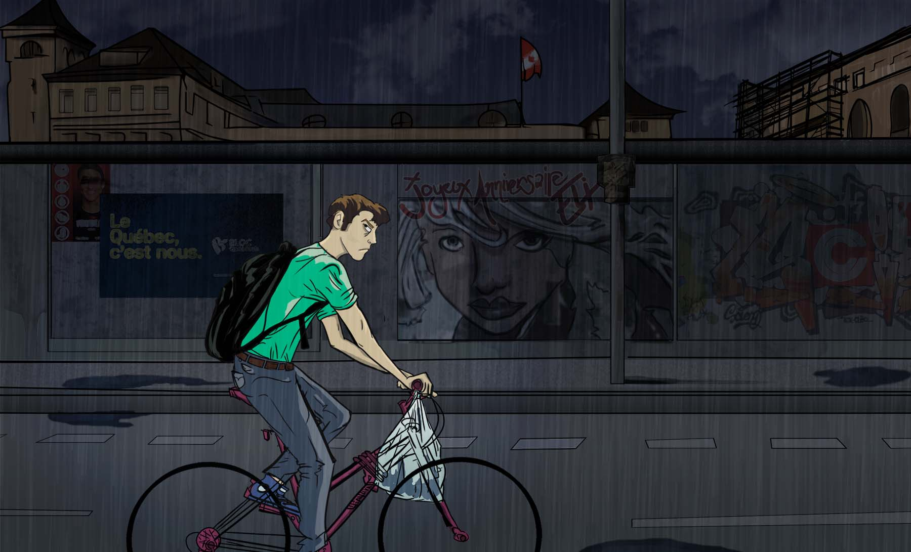
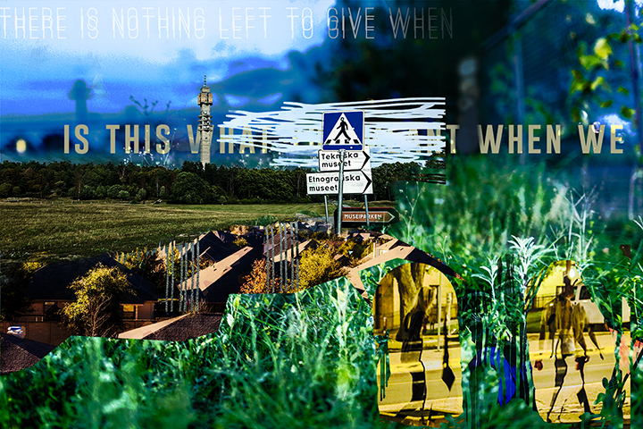
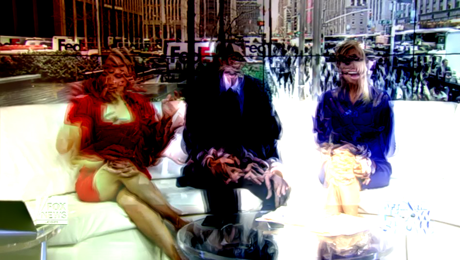
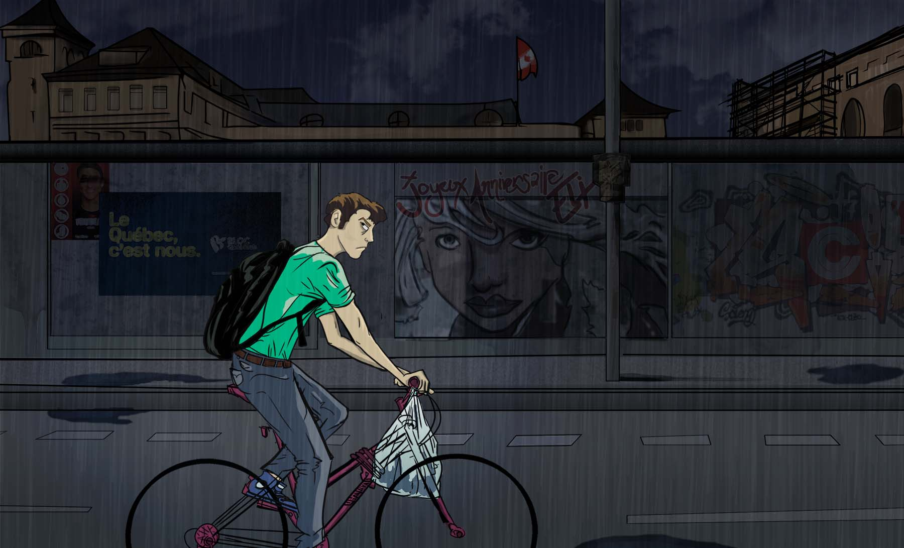
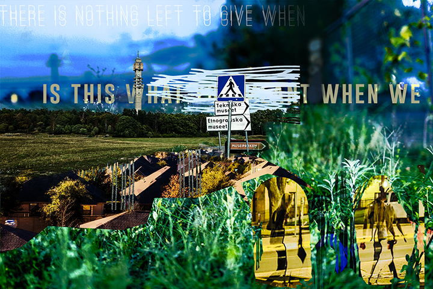
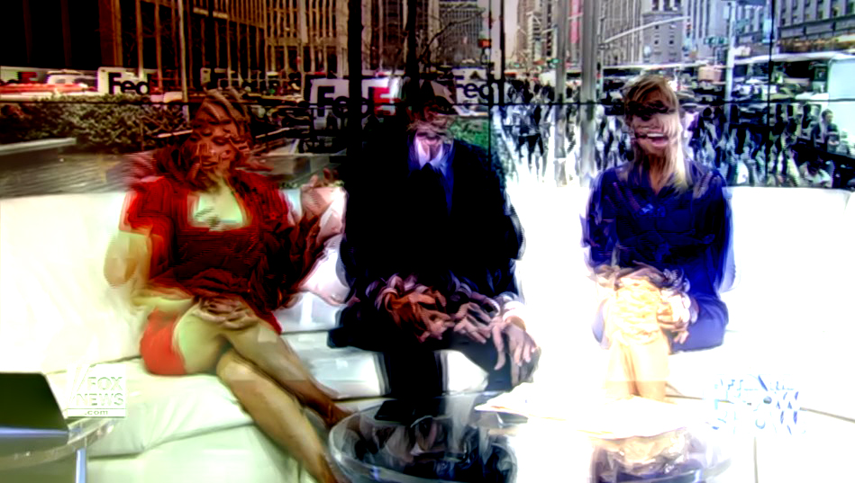
 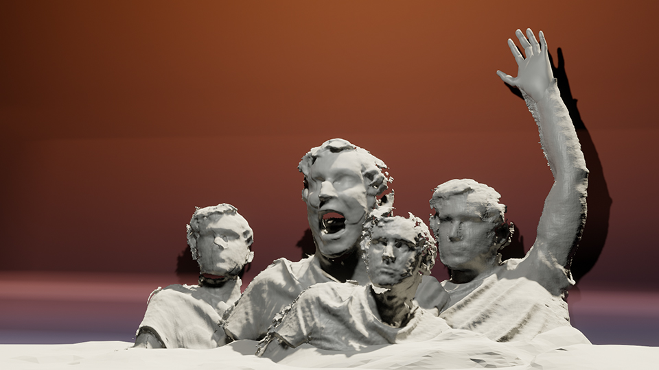
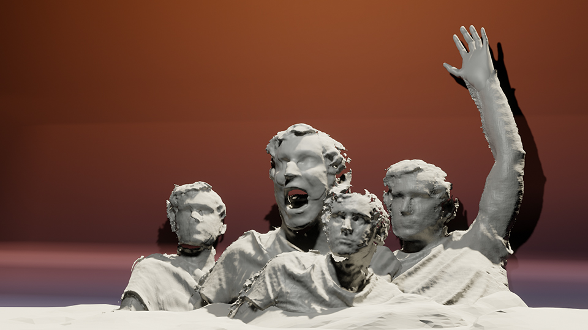
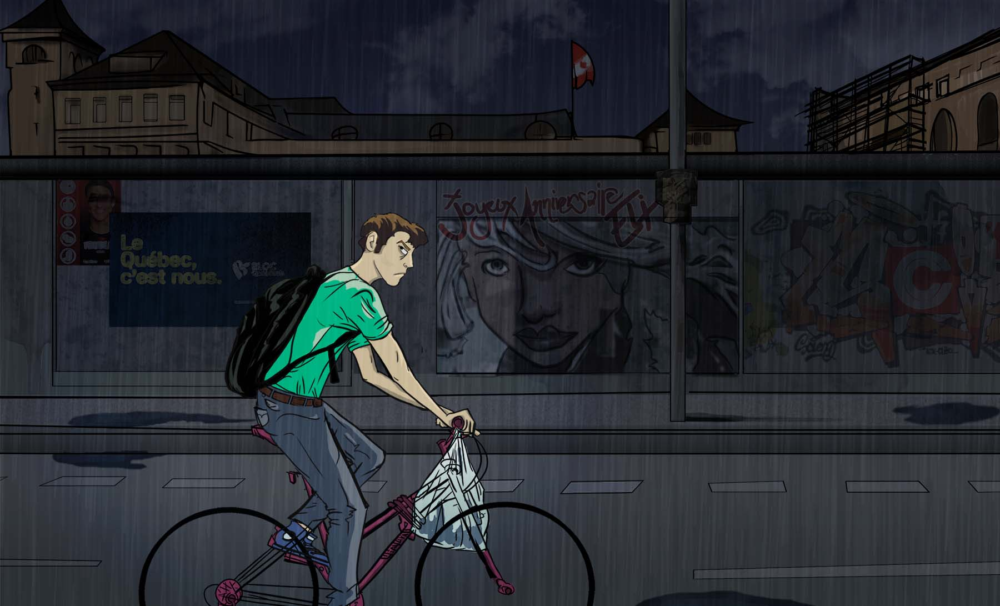
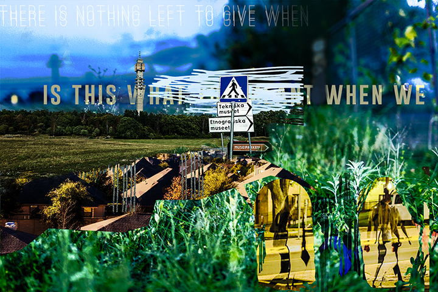
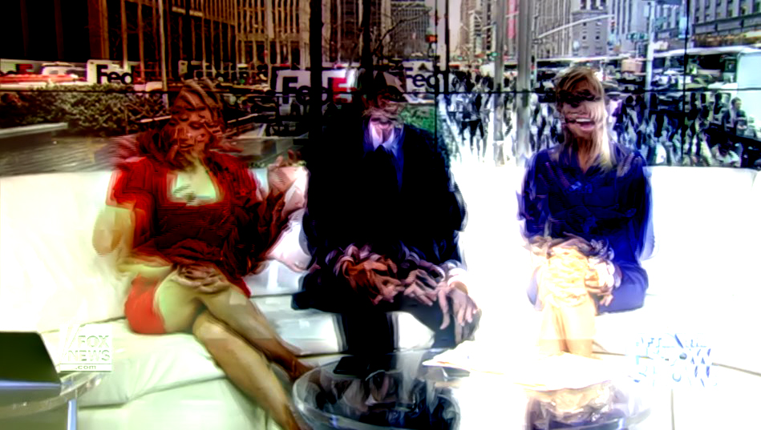
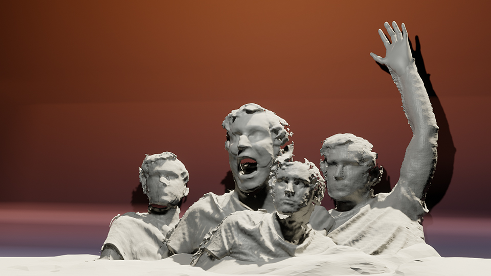